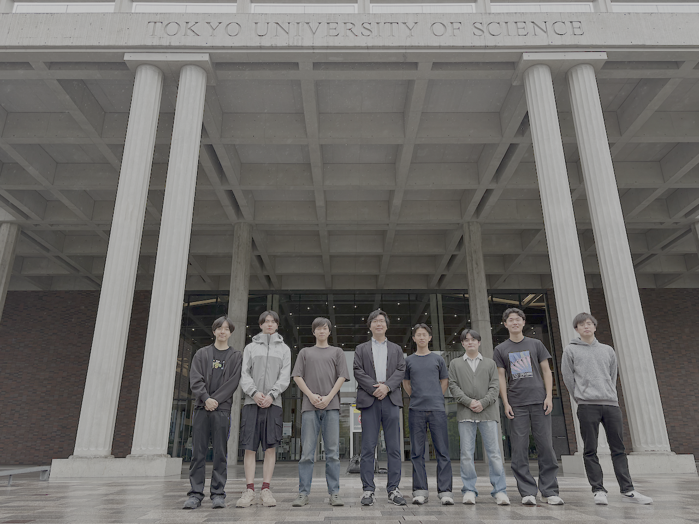

CrystOD
CRYSTAL ORBITAL DIAGRAMVisit the website for CrystOD (Crystal Orbital Diagram), developed by the Mochizuki Research Group.
Mochizuki Research Group
The Mochizuki Research Group is based in the Department of Materials Science and Technology, Faculty of Advanced Engineering, Tokyo University of Science. We perform theoretical calculations without empirical parameters, using first-principles methods based on density functional theory. Through electronic structure calculations, lattice dynamics, molecular dynamics, and symmetry analysis, we design materials and unravel their underlying mechanisms on computers, seeking new substances and materials for the next generation.

A video of a trial lecture for high school students attending the Tokyo University of Science Open Campus is now available on YouTube.
Dr. Mochizuki gave an invited talk at STAC-16 (The 16th International Conference on the Science and Technology for Advanced Ceramics).
On September 3, our group held a gathering to celebrate the completion of the graduate school entrance examinations. The gathering was filmed and featured on TV Tokyo’s program “Goissho Shitemo Ii desu ka?”
Six fourth-year undergraduate students from our group presented posters at the 24th Joint Meeting on Inorganic Materials, held at the Kofu Campus of the University of Yamanashi. Masayoshi Mita received an Encouragement Award at the meeting. Congratulations!
Professor Yoon Seok-hyun, Seoyeon Ko, and Hanseul Cho from Ewha Womans University, who collaborate internationally with Dr. Mochizuki, visited our group.
CrystOD, a package developed by Dr. Mochizuki, has been released. It can be installed with pip install crystod.
We have launched a new collection of educational resources. Visit Education to explore them.
We have published a selection of molecular orbital diagrams calculated using a package developed by Dr. Mochizuki. See Research for details.
Dr. Soungmin Bae, Specially Appointed Assistant Professor at Yokohama City University and a collaborator of Dr. Mochizuki, visited our group. We discussed macer, a package they are developing together.
We have released pyscf-cli, an educational package for quantum chemistry calculations with PySCF.
Mr. Kazuya Yabuta of the inorganic materials alumni association, Executive Director of the Nippon Slag Association, visited our group. Thank you for the encouragement!
The Mochizuki Research Group website is now online.
Dr. Jan Hempelmann of Institute of Science Tokyo, a collaborator of Dr. Mochizuki, visited our group. We discussed chemical bonding in solids.
Dr. Mochizuki gave an invited talk at The 1st MRS-K and MRS-J Bilateral Joint Symposium, held during The 4th Global Conference of Innovation Materials (GCIM2026) on Jeju Island, South Korea.
Dr. Soungmin Bae, Assistant Professor at Tohoku University and a collaborator of Dr. Mochizuki, visited our group. We discussed point defects and electronic structures in two-dimensional semiconductors.
The Mochizuki Research Group has been established. Six fourth-year undergraduate students have joined the group.
Software
Visit the website for CrystOD (Crystal Orbital Diagram), developed by the Mochizuki Research Group.